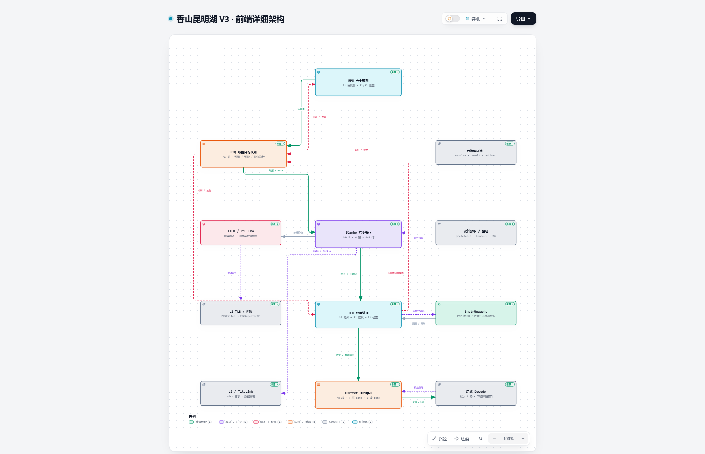

XIANGSHAN · KUNMINGHU V3
从预测到指令供给
阅读前端主数据路径，再展开预测、缓存与取指内部细节。四张图支持主题切换、节点搜索、关系聚焦和源码查看。
01 · FRONTEND
前端架构总览
BPU → FTQ → ICache → IFU → IBuffer → Decode；重定向与翻译、回填、非缓存路径。
02 · BRANCH PREDICTION
BPU 预测与恢复
早期预测、S2/S3 覆盖、TAGE-SC、目标预测、历史恢复和输出仲裁。
03 · INSTRUCTION CACHE
ICache 与 FDIP
PrefetchPipe、WayLookup、MainPipe、Meta/DataArray、MSHR、L2 回填。
04 · INSTRUCTION FETCH
IFU 与指令缓冲
S0 边界、S1 压紧/预对齐、S2 展开与校验、反压和非缓存门禁。
